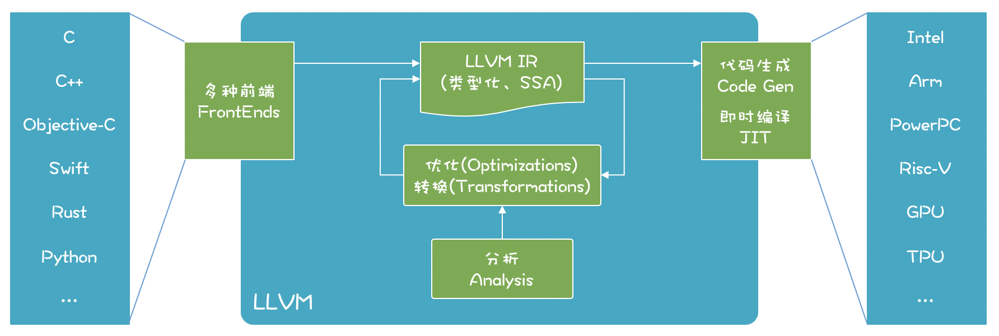
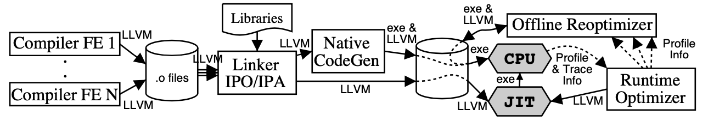
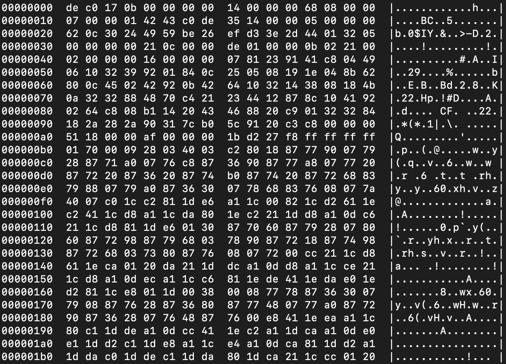

- 00 开篇词 为什么你要学习编译原理？.md.html
- 01 理解代码：编译器的前端技术.md.html
- 02 正则文法和有限自动机：纯手工打造词法分析器.md.html
- 03 语法分析（一）：纯手工打造公式计算器.md.html
- 04 语法分析（二）：解决二元表达式中的难点.md.html
- 05 语法分析（三）：实现一门简单的脚本语言.md.html
- 06 编译器前端工具（一）：用Antlr生成词法、语法分析器.md.html
- 07 编译器前端工具（二）：用Antlr重构脚本语言.md.html
- 08 作用域和生存期：实现块作用域和函数.md.html
- 09 面向对象：实现数据和方法的封装.md.html
- 10 闭包： 理解了原理，它就不反直觉了.md.html
- 11 语义分析（上）：如何建立一个完善的类型系统？.md.html
- 12 语义分析（下）：如何做上下文相关情况的处理？.md.html
- 13 继承和多态：面向对象运行期的动态特性.md.html
- 14 前端技术应用（一）：如何透明地支持数据库分库分表？.md.html
- 15 前端技术应用（二）：如何设计一个报表工具？.md.html
- 16 NFA和DFA：如何自己实现一个正则表达式工具？.md.html
- 17 First和Follow集合：用LL算法推演一个实例.md.html
- 18 移进和规约：用LR算法推演一个实例.md.html
- 19 案例总结与热点问题答疑：对于左递归的语法，为什么我的推导不是左递归的？.md.html
- 20 高效运行：编译器的后端技术.md.html
- 21 运行时机制：突破现象看本质，透过语法看运行时.md.html
- 22 生成汇编代码（一）：汇编语言其实不难学.md.html
- 23 生成汇编代码（二）：把脚本编译成可执行文件.md.html
- 24 中间代码：兼容不同的语言和硬件.md.html
- 25 后端技术的重用：LLVM不仅仅让你高效.md.html
- 26 生成IR：实现静态编译的语言.md.html
- 27 代码优化：为什么你的代码比他的更高效？.md.html
- 28 数据流分析：你写的程序，它更懂.md.html
- 29 目标代码的生成和优化（一）：如何适应各种硬件架构？.md.html
- 30 目标代码的生成和优化（二）：如何适应各种硬件架构？.md.html
- 31 内存计算：对海量数据做计算，到底可以有多快？.md.html
- 32 字节码生成：为什么Spring技术很强大？.md.html
- 33 垃圾收集：能否不停下整个世界？.md.html
- 34 运行时优化：即时编译的原理和作用.md.html
- 35 案例总结与热点问题答疑：后端部分真的比前端部分难吗？.md.html
- 36 当前技术的发展趋势以及其对编译技术的影响.md.html
- 37 云编程：云计算会如何改变编程模式？.md.html
- 38 元编程：一边写程序，一边写语言.md.html
- 加餐 汇编代码编程与栈帧管理.md.html
- 用户故事 因为热爱，所以坚持.md.html
- 第二季回归 这次，我们一起实战解析真实世界的编译器.md.html
- 结束语 用程序语言，推动这个世界的演化.md.html
- 捐赠
25 后端技术的重用：LLVM不仅仅让你高效
在编译器后端，做代码优化和为每个目标平台生成汇编代码，工作量是很大的。那么，有什么办法能降低这方面的工作量，提高我们的工作效率呢？答案就是利用现成的工具。
在前端部分，我就带你使用Antlr生成了词法分析器和语法分析器。那么在后端部分，我们也可以获得类似的帮助，比如利用LLVM和GCC这两个后端框架。
相比前端的编译器工具，如Lex（Flex）、Yacc（Bison）和Antlr等，对于后端工具，了解的人比较少，资料也更稀缺，如果你是初学者，那么上手的确有一些难度。不过我们已经用20～24讲，铺垫了必要的基础知识，也尝试了手写汇编代码，这些知识足够你学习和掌握后端工具了。
本节课，我想先让你了解一些背景信息，所以会先概要地介绍一下LLVM和GCC这两个有代表性的框架的情况，这样，当我再更加详细地讲解LLVM，带你实际使用一下它的时候，你接受起来就会更加容易了。
两个编译器后端框架：LLVM和GCC
LLVM是一个开源的编译器基础设施项目，主要聚焦于编译器的后端功能（代码生成、代码优化、JIT……）。它最早是美国伊利诺伊大学的一个研究性项目，核心主持人员是Chris Lattner（克里斯·拉特纳）。
LLVM的出名是由于苹果公司全面采用了这个框架。苹果系统上的C语言、C++、Objective-C的编译器Clang就是基于LLVM的，最新的Swift编程语言也是基于LLVM，支撑了无数的移动应用和桌面应用。无独有偶，在Android平台上最新的开发语言Kotlin，也支持基于LLVM编译成本地代码。
另外，由Mozilla公司（Firefox就是这个公司的产品）开发的系统级编程语言RUST，也是基于LLVM开发的。还有一门相对小众的科学计算领域的语言，叫做Julia，它既能像脚本语言一样灵活易用，又可以具有C语言一样的速度，在数据计算方面又有特别的优化，它的背后也有LLVM的支撑。
OpenGL和一些图像处理领域也在用LLVM，我还看到一个资料，说阿里云的工程师实现了一个Cava脚本语言，用于配合其搜索引擎系统HA3。
还有，在人工智能领域炙手可热的TensorFlow框架，在后端也是用LLVM来编译。它把机器学习的IR翻译成LLVM的IR，然后再翻译成支持CPU、GPU和TPU的程序。
所以这样看起来，你所使用的很多语言和工具，背后都有LLVM的影子，只不过你可能没有留意罢了。所以在我看来，要了解编译器的后端技术，就不能不了解LLVM。
与LLVM起到类似作用的后端编译框架是GCC（GNU Compiler Collection，GNU编译器套件）。它支持了GNU Linux上的很多语言，例如C、C++、Objective-C、Fortran、Go语言和Java语言等。其实，它最初只是一个C语言的编译器，后来把公共的后端功能也提炼了出来，形成了框架，支持多种前端语言和后端平台。最近华为发布的方舟编译器，据说也是建立在GCC基础上的。
LLVM和GCC很难比较优劣，因为这两个项目都取得了很大的成功。
在本课程中，我们主要采用LLVM，但其中学到的一些知识，比如IR的设计、代码优化算法、适配不同硬件的策略，在学习GCC或其他编译器后端的时候，也是有用的，从而大大提升学习效率。
接下来，我们先来看看LLVM的构成和特点，让你对它有个宏观的认识。
了解LLVM的特点
LLVM能够支持多种语言的前端、多种后端CPU架构。在LLVM内部，使用类型化的和SSA特点的IR进行各种分析、优化和转换：

LLVM项目包含了很多组成部分：
LLVM核心（core）。就是上图中的优化和分析工具，还包括了为各种CPU生成目标代码的功能；这些库采用的是LLVM IR，一个良好定义的中间语言，在上一讲，我们已经初步了解它了。
Clang前端（是基于LLVM的C、C++、Objective-C编译器）。
LLDB（一个调试工具）。
LLVM版本的C++标准类库。
其他一些子项目。
我个人很喜欢LLVM，想了想，主要有几点原因：
首先，LLVM有良好的模块化设计和接口。以前的编译器后端技术很难复用，而LLVM具备定义了良好接口的库，方便使用者选择在什么时候，复用哪些后端功能。比如，针对代码优化，LLVM提供了很多算法，语言的设计者可以自己选择合适的算法，或者实现自己特殊的算法，具有很好的灵活性。
第二，LLVM同时支持JIT（即时编译）和AOT（提前编译）两种模式。过去的语言要么是解释型的，要么编译后运行。习惯了使用解释型语言的程序员，很难习惯必须等待一段编译时间才能看到运行效果。很多科学工作者，习惯在一个REPL界面中一边写脚本，一边实时看到反馈。LLVM既可以通过JIT技术支持解释执行，又可以完全编译后才执行，这对于语言的设计者很有吸引力。
第三，有很多可以学习借鉴的项目。Swift、Rust、Julia这些新生代的语言，实现了很多吸引人的特性，还有很多其他的开源项目，而我们可以研究、借鉴它们是如何充分利用LLVM的。
第四，全过程优化的设计思想。LLVM在设计上支持全过程的优化。Lattner和Adve最早关于LLVM设计思想的文章《LLVM: 一个全生命周期分析和转换的编译框架》，就提出计算机语言可以在各个阶段进行优化，包括编译时、链接时、安装时，甚至是运行时。
以运行时优化为例，基于LLVM我们能够在运行时，收集一些性能相关的数据对代码编译优化，可以是实时优化的、动态修改内存中的机器码；也可以收集这些性能数据，然后做离线的优化，重新生成可执行文件，然后再加载执行，这一点非常吸引我，因为在现代计算环境下，每种功能的计算特点都不相同，确实需要针对不同的场景做不同的优化。下图展现了这个过程（图片来源《 LLVM: A Compilation Framework for Lifelong Program Analysis & Transformation》）：

我建议你读一读Lattner和Adve的这篇论文（另外强调一下，当你深入学习编译技术的时候，阅读领域内的论文就是必不可少的一项功课了）。
第五，LLVM的授权更友好。GNU的很多软件都是采用GPL协议的，所以如果用GCC的后端工具来编写你的语言，你可能必须要按照GPL协议开源。而LLVM则更友好一些，你基于LLVM所做的工作，完全可以是闭源的软件产品。
而我之所以说：“LLVM不仅仅让你更高效”，就是因为上面它的这些特点。
现在，你已经对LLVM的构成和特点有一定的了解了，接下来，我带你亲自动手操作和体验一下LLVM的功能，这样你就可以迅速消除对它的陌生感，快速上手了。
体验一下LLVM的功能
首先你需要安装一下LLVM（参照官方网站上的相关介绍下载安装）。因为我使用的是macOS，所以用brew就可以安装。
brew install llvm
因为LLVM里面带了一个版本的Clang和C++的标准库，与本机原来的工具链可能会有冲突，所以brew安装的时候并没有在/usr/local下建立符号链接。你在用LLVM工具的时候，要配置好相关的环境变量。
# 可执行文件的路径
export PATH="/usr/local/opt/llvm/bin:$PATH"
# 让编译器能够找到LLVM
export LDFLAGS="-L/usr/local/opt/llvm/lib"
export CPPFLAGS="-I/usr/local/opt/llvm/include”
安装完毕之后，我们使用一下LLVM自带的命令行工具，分几步体验一下LLVM的功能：
1.从C语言代码生成IR；- 2.优化IR；- 3.从文本格式的IR生成二进制的字节码；- 4.把IR编译成汇编代码和可执行文件。
从C语言代码生成IR代码比较简单，上一讲中我们已经用到过一个C语言的示例代码：
//fun1.c
int fun1(int a, int b){
int c = 10;
return a+b+c;
}
用前端工具Clang就可以把它编译成IR代码：
clang -emit-llvm -S fun1.c -o fun1.ll
其中，-emit-llvm参数告诉Clang生成LLVM的汇编码，也就是IR代码（如果不带这个参数，就会生成针对目标机器的汇编码）所生成的IR我们上一讲也见过，你现在应该能够读懂它了。你可以多写几个不同的程序，看看生成的IR是什么样的，比如if语句、循环语句等等（这时你完成了第一步）：
; ModuleID = 'function-call1.c'
source_filename = "function-call1.c"
target datalayout = "e-m:o-i64:64-f80:128-n8:16:32:64-S128"
target triple = "x86_64-apple-macosx10.14.0"
; Function Attrs: noinline nounwind optnone ssp uwtable
define i32 @fun1(i32, i32) #0 {
%3 = alloca i32, align 4
%4 = alloca i32, align 4
%5 = alloca i32, align 4
store i32 %0, i32* %3, align 4
store i32 %1, i32* %4, align 4
store i32 10, i32* %5, align 4
%6 = load i32, i32* %3, align 4
%7 = load i32, i32* %4, align 4
%8 = add nsw i32 %6, %7
%9 = load i32, i32* %5, align 4
%10 = add nsw i32 %8, %9
ret i32 %10
}
attributes #0 = { noinline nounwind optnone ssp uwtable "correctly-rounded-divide-sqrt-fp-math"="false" "disable-tail-calls"="false" "less-precise-fpmad"="false" "min-legal-vector-width"="0" "no-frame-pointer-elim"="true" "no-frame-pointer-elim-non-leaf" "no-infs-fp-math"="false" "no-jump-tables"="false" "no-nans-fp-math"="false" "no-signed-zeros-fp-math"="false" "no-trapping-math"="false" "stack-protector-buffer-size"="8" "target-cpu"="penryn" "target-features"="+cx16,+fxsr,+mmx,+sahf,+sse,+sse2,+sse3,+sse4.1,+ssse3,+x87" "unsafe-fp-math"="false" "use-soft-float"="false" }
!llvm.module.flags = !{!0, !1}
!llvm.ident = !{!2}
!0 = !{i32 1, !"wchar_size", i32 4}
!1 = !{i32 7, !"PIC Level", i32 2}
!2 = !{!"clang version 8.0.0 (tags/RELEASE_800/final)"}
上一讲我们提到过，可以对生成的IR做优化，让代码更短，你只要在上面的命令中加上-O2参数就可以了（这时你完成了第二步）：
clang -emit-llvm -S -O2 fun1.c -o fun1.ll
这个时候，函数体的核心代码就变短了很多。这里面最重要的优化动作，是从原来使用内存（alloca指令是在栈中分配空间，store指令是往内存里写入值），优化到只使用寄存器（%0、%1是参数，%3、%4也是寄存器）。
define i32 @fun1(i32, i32) #0 {
%3 = add nsw i32 %0, %1
%4 = add nsw i32 %3, 10
ret i32 %4
}
你还可以用opt命令来完成上面的优化，具体我们在27、28讲中讲优化算法的时候再细化。
另外，LLVM的IR有两种格式。在示例代码中显示的，是它的文本格式，文件名一般以.ll结尾。第二种格式是字节码（bitcode）格式，文件名以.bc结尾。为什么要用两种格式呢？因为文本格式的文件便于程序员阅读，而字节码格式的是二进制文件，便于机器处理，比如即时编译和执行。生成字节码格式之后，所占空间会小很多，所以可以快速加载进内存，并转换为内存中的对象格式。而如果加载文本文件，则还需要一个解析的过程，才能变成内存中的格式，效率比较慢。
调用llvm-as命令，我们可以把文本格式转换成字节码格式：
llvm-as fun1.ll -o fun1.bc
我们也可以用clang直接生成字节码，这时不需要带-S参数，而是要用-c参数。
clang -emit-llvm -c fun1.c -o fun1.bc
因为.bc文件是二进制文件，不能直接用文本编辑器查看，而要用hexdump命令查看（这时你完成了第三步）：
hexdump -C fun1.bc

LLVM的一个优点，就是可以即时编译运行字节码，不一定非要编译生成汇编码和可执行文件才能运行（这一点有点儿像Java语言），这也让LLVM具有极高的灵活性，比如，可以在运行时根据收集的性能信息，改变优化策略，生成更高效的机器码。
再进一步，我们可以把字节码编译成目标平台的汇编代码。我们使用的是llc命令，命令如下：
llc fun1.bc -o fun1.s
用clang命令也能从字节码生成汇编代码，要注意带上-S参数就行了：
clang -S fun1.bc -o fun1.s
到了这一步，我们已经得到了汇编代码，接着就可以进一步生成目标文件和可执行文件了。
实际上，使用LLVM从源代码到生成可执行文件有两条可能的路径：

第一条路径，是把每个源文件分别编译成字节码文件，然后再编译成目标文件，最后链接成可执行文件。
第二条路径，是先把编译好的字节码文件链接在一起，形成一个更大的字节码文件，然后对这个字节码文件进行进一步的优化，之后再生成目标文件和可执行文件。
第二条路径比第一条路径多了一个优化的步骤，第一条路径只对每个模块做了优化，没有做整体的优化。所以，如有可能，尽量采用第二条路径，这样能够生成更加优化的代码。
现在你完成了第四步，对LLVM的命令行工具有了一定的了解。总结一下，我们用到的命令行工具包括：clang前端、llvm-as、llc，其他命令还有opt（代码优化）、llvm-dis（将字节码再反编译回ll文件）、llvm-link（链接）等，你可以看它们的help信息，并练习使用。
在熟悉了命令行工具之后，我们就可以进一步在编程环境中使用LLVM了，不过在此之前，需要搭建一个开发环境。
建立C++开发环境来使用LLVM
LLVM本身是用C++开发的，所以最好采用C++调用它的功能。当然，采用其他语言也有办法调用LLVM：
- C语言可以调用专门的C接口；
- 像Go、Rust、Python、Ocaml、甚至Node.js都有对LLVM API的绑定；
- 如果使用Java，也可以通过JavaCPP（类似JNI）技术调用LLVM。
在课程中，我用C++来做实现，因为这样能够最近距离地跟LLVM打交道。与此同时，我们前端工具采用的Antlr，也能够支持C++开发环境。所以，我为playscript建立了一个C++的开发环境。
开发工具方面：原则上只要一个编辑器加上工具链就行，但为了提高效率，有IDE的支持会更好（我用的是JetBrains的Clion）。
构建工具方面：目前LLVM本身用的是CMake，而Clion刚好也采用CMake，所以很方便。
这里我想针对CMake多解释几句，因为越来越多的C++项目都是用CMake来管理的，LLVM以及Antlr的C++版本也采用了CMake，你最好对它有一定了解。
CMake是一款优秀的工程构建工具，它类似于Java程序员们习惯使用的Maven工具。对于只包含少量文件或模块的C或C++程序，你可以仅仅通过命令行带上一些参数就能编译。
不过，实际的项目都会比较复杂，往往会包含比较多的模块，存在比较复杂的依赖关系，编译过程也不是一步能完成的，要分成多步。这时候我们一般用make管理项目的构建过程，这就要学会写make文件。但手工写make文件工作量会比较大，而CMake就是在make的基础上再封装了一层，它能通过更简单的配置文件，帮我们生成make文件，帮助程序员提升效率。
整个开发环境的搭建我在课程里就不多写了，你可以参见示例代码所附带的文档。文档里有比较清晰的说明，可以帮助你把环境搭建起来，并运行示例程序。
另外，我知道你可能对C++并不那么熟悉。但你应该学过C语言，所以示例代码还是能看懂的。
课程小结
本节课，为了帮助你理解后端工具，我先概要介绍了后端工具的情况，接着着重介绍了LLVM的构成和特点，然后又带你熟悉了它的命令行工具，让你能够生成文本和字节码两种格式的IR，并生成可执行文件，最后带你了解了LLVM的开发环境。
本节课的内容比较好理解，因为侧重让你建立跟LLVM的熟悉感，没有什么复杂的算法和原理，而我想强调的是以下几点：
1.后端工具对于语言设计者很重要，我们必须学会善加利用；- 2.LLVM有很好的模块化设计，支持即时编译（JIT）和提前编译（AOT），支持全过程的优化，并且具备友好的授权，值得我们好好掌握；- 3.你要熟悉LLVM的命令行工具，这样可以上手做很多实验，加深对LLVM的了解。
最后，我想给你的建议是：一定要动手安装和使用LLVM，写点代码测试它的功能。比如，写点儿C、C++等语言的程序，并翻译成IR，进一步熟悉LLVM的IR。下一讲，我们就要进入它的内部，调用它的API来生成IR和运行了！
一课一思
很多语言都获得了后端工具的帮助，比如可以把Android应用直接编译成机器码，提升运行效率。你所经常使用的计算机语言采用了什么后端工具？有什么特点？欢迎在留言区分享。
最后，感谢你的阅读，如果这篇文章让你有所收获，也欢迎你分享给更多的朋友。
© 2019 - 2023 Liangliang Lee. Powered by gin and hexo-theme-book.